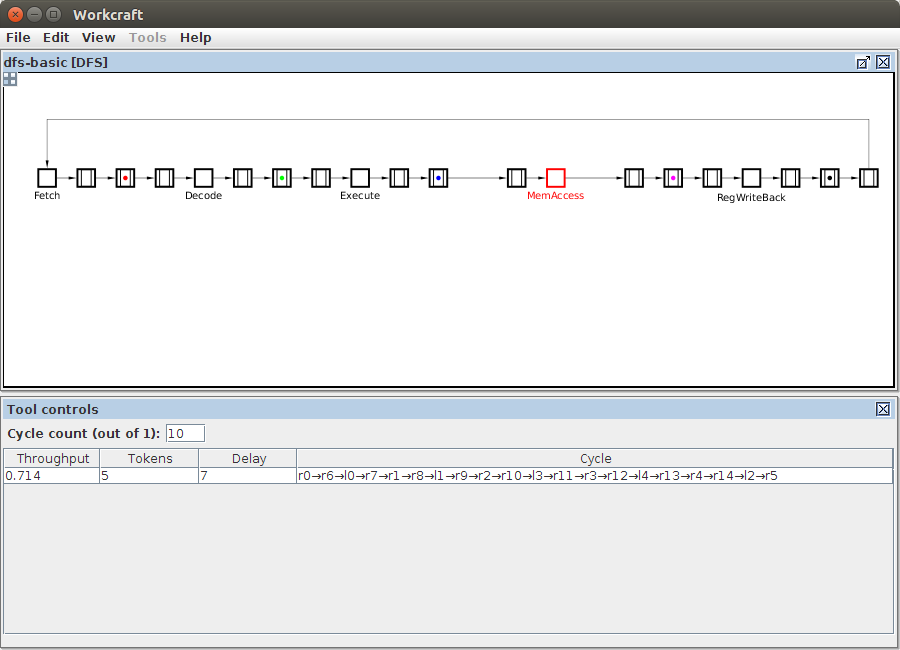
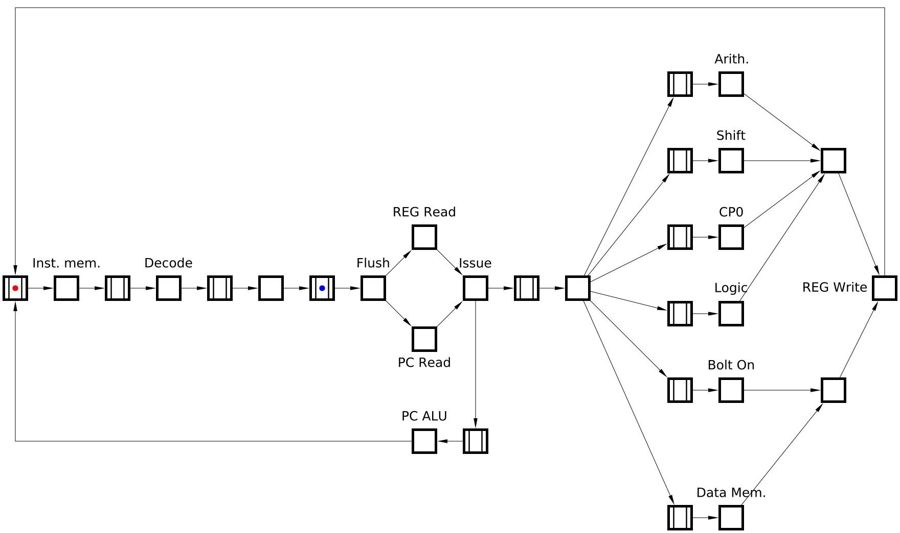

Table of Contents
Optimising Asynchronous Pipelines Using Wagging
In this practical we consider asynchronous pipelines and use formal techniques to model and analyse them, and to improve their performance.
Static Data-Flow Structures
Many systems can be abstractly represented by Static Data-Flow Structures [1], which are closely related to pipelines. This abstraction separates the structure and the function of the system from the implementation details of its components.
The possibility of formally modelling and reasoning about the system at this high-level architectural level is crucial, as the design decisions made at this level will affect all the subsequent stages of the design. Moreover, optimisations performed at this level are likely to have a much stronger impact than micro-optimisations applied towards the end of the design process.
Wagging
Wagging [2] is a technique for improving the throughput of a pipeline by replicating the operational unit of a stage and cycling which copy (slice) the tokens should go though - see the picture below. (The analogy is with a dog wagging its tail: 2-way wagging has been applied to the 2nd stage in the picture, which means that the 1st token entering the stage goes into the upper slice, the 2nd token goes into the lower slice, the 3rd token goes into the upper slice, etc.) The tokens exit the stage in the same order they have entered it. It is assumed that the pipeline is implemented as an electronic circuit (hence the term `logic' is used instead of `operational unit'), though wagging can be applied to almost any kind of pipelines.

Each stage has a wagging level - the number of copies of logic it contains. The inputs and outputs of each slice are connected to mixers collecting the data from the outputs of one wagging logic stage and then delivering it to the current slice of the next stage. The mixers also latch the data to allow the connected slices to work independently. The above picture shows an example pipeline with a combination of non-wagging and wagging logic stages. These are connected using a selection of mixers.
Advantages of wagging:
- can significantly increase the throughput of the pipeline;
- requires almost no effort from the designer (the technique can be automated to a large extent);
- the energy consumption of wagging circuits is nearly identical to the original non-wagging circuit which forms each of the slices [2].
Disadvantages of wagging:
- logic has to be replicated, which incurs circuit area overhead;
- latency is increased due to mixers.
Each slice of a wagging stage should contain at least one register to accept an incoming token. For efficiency reasons it is advantageous to have a register as the first element of the slice – this enables the token to propagate into the active slice with the minimum delay and free the space for the next token.
.
Exercise 1: Conceptual RISC pipeline
Consider the following conceptual RISC pipeline. Recall that in asynchronous pipelines tokens must be separated by empty registers, and so a cycle with N tokens must contain at least 2N+1 registers to avoid deadlocks, and the best performance is achieved with 3N registers, like in the pipeline below.

Re-create this Dataflow Structure model in Workcraft. For simplicity, set all the register delays to 0, and the delays of combinational logic blocks to 1, except for MemAccess whose delay should be set to 3, making it the bottleneck. Make sure that token colours are all different - see the Token color property of the marked registers in the Property editor.
Simulate this model to get the feel of the spread token semantics [3]. Note that:
- the enabled elements are highlighted in orange - these are:
- empty registers which can accept a token (only possible when the next register is empty);
- registers which can lose a token (this is only possible after the token has `spread' to the next register);
- combinational logic that is ready to be evaluated or reset (the corresponding box turns grey when the logic is evaluated, and turns back to white when the logic is reset);
- the delays are ignored during simulation;
- with spread token semantics, a token can be spread across several adjacent registers, and the colours of the tokens are chosen to help distinguishing which registers contain copies of the same token.
Now analyse the performance of this pipeline with the cycle analyser ![[A] Cycle analyser](../../../help/dfs/editor_tools-cycle_analysis.png "[A] Cycle analyser") tool. In the Tool controls window one can see the result of the analysis: there is a single cycle with the estimated throughput 0.714. Indeed, the total delay of the pipeline is 1+1+1+3+1=7, and there are 5 tokens in it, so the throughput is 5/7≈0.714. Moreover, the bottleneck
tool. In the Tool controls window one can see the result of the analysis: there is a single cycle with the estimated throughput 0.714. Indeed, the total delay of the pipeline is 1+1+1+3+1=7, and there are 5 tokens in it, so the throughput is 5/7≈0.714. Moreover, the bottleneck MemAccess is highlighted in red:

By clicking on a cycle in the Tool control window one can highlight it in the model, with the bottleneck(s) of this cycle shown in red (if any). If no cycle is selected, the bottleneck(s) of the whole model are shown.
The performance of this pipeline can be improved using wagging. Select the bottleneck MemAccess together with preceding register (see the note about wagging efficiency) and apply 2-way wagging to it: Tools→Wagging→2-way wagging. This transformation replicates the selected section of pipeline and adds some control structures (for the purposes of this practical, the gory details are swept under the carpet abstracted away for the sake of presentation). Now the tokens entering this stage of the pipeline alternate between choosing the upper and lower branch, and exit the stage in the same order they have entered it. This has an effect of halving the stage delay: Indeed, the Cycle analyser shows that the throughput has increased from 0.714 to 0.909:

Note that there are several cycles with infinite throughput – these are formed by the control structures which have 0 delays and can be ignored. Only the two cycles shown at the top are relevant – they correspond to the two branches formed due to wagging.
To further improve the performance of the pipeline, 3-way wagging can be applied instead of 2-way wagging: Indeed, the delay of MemAccess is three times the delay of the other stages. Undo the 2-way wagging by pressing Ctrl+Z, select MemAccess and preceding register, and apply 3-way wagging to it: Tools→Wagging→3-way wagging. This increases the throughput to 1.
Exercise 2: More realistic RISC pipeline
The following ARISC pipeline was adapted from [4]. All register delays were set to 0, and delays of most of the logic blocks were set to 1. The only exceptions are the Arith. and Data Mem. blocks with the delays 2 and 4, respectively.

Download this model: dfs-arisc.work (4 KiB).
Analyse this model using cycle analyser tool.
By default the Tool control window shows 10 cycles with the worst throughput – this is controlled by the Cycle count field in this window. You can increase this number to see all the cycles in the model.
The throughput of the whole pipeline is determined by the throughput of its slowest cycle, e.g. the throughput of the above pipeline is 0.154.
Examine the cycles with the suboptimal throughput, and intelligently apply wagging to improve the performance of this pipeline. Try to increase the throughput to 0.2. Solution: Apply 4-way wagging to Data Mem. and 2-way wagging to Arith. – in both cases include the preceding register.
===== Feedback =====
- As discussed in https://www.dokuwiki.org/plugin:include#controlling_header_size_in_included_pages, by default, the headers in included pages start one level lower than the last header in the current page. This can be tweaked by adding an empty header above the include:\\
====== ====== {{page>:tutorial:feedback&inline}} - For offline help generation the content of
feedbackpage should be temporary wrapped in<WRAP hide>. Note that the headers still propagate to the table of contents even if inside the hidden wrap. Therefore the Feedback title needs to be converted to something else, e.g. to code by adding two spaces in front.